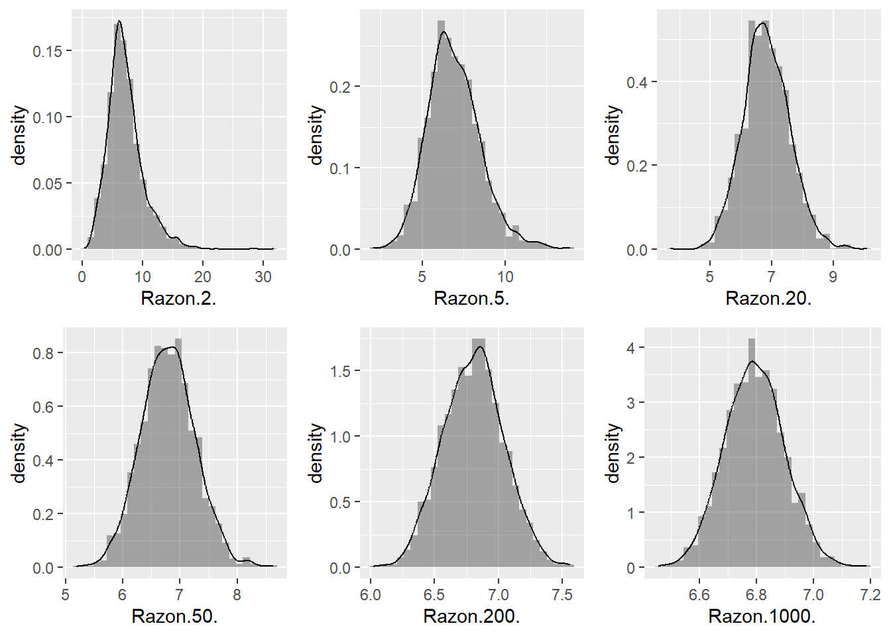
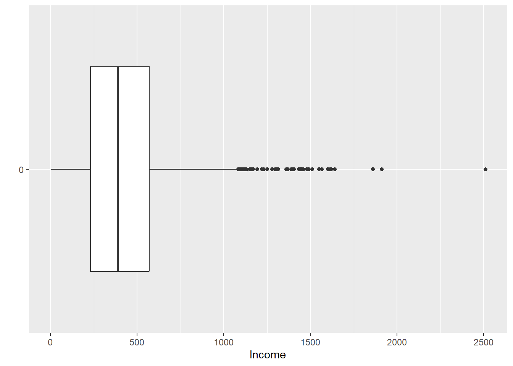
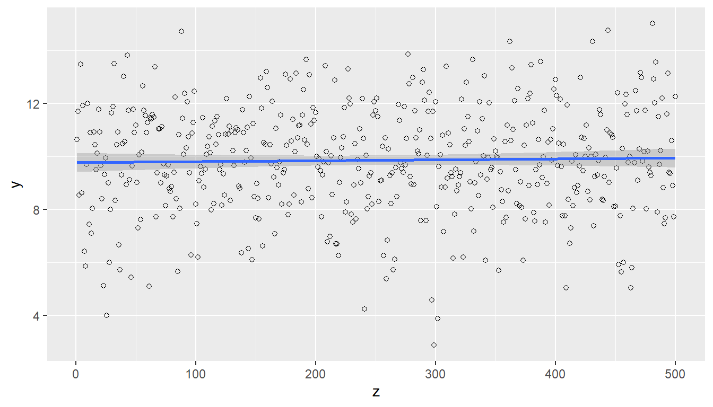
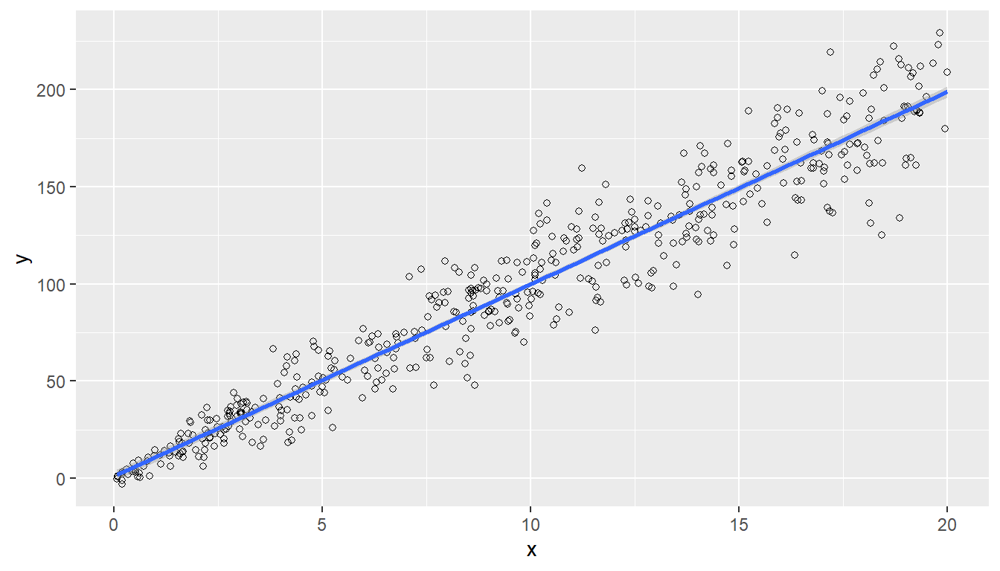
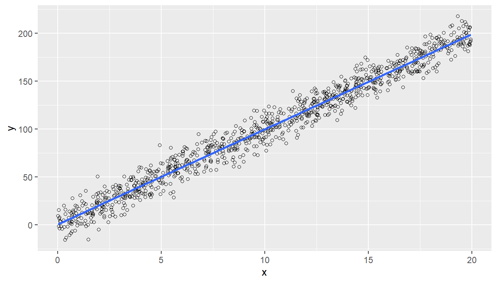
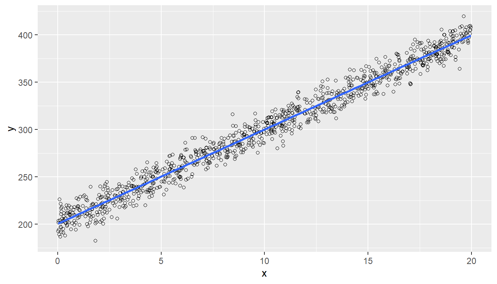
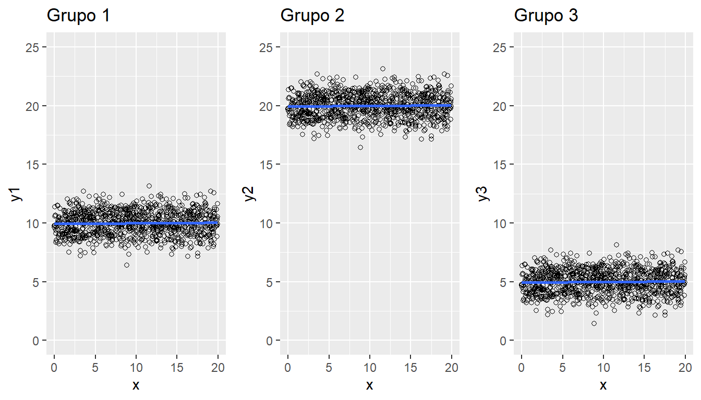
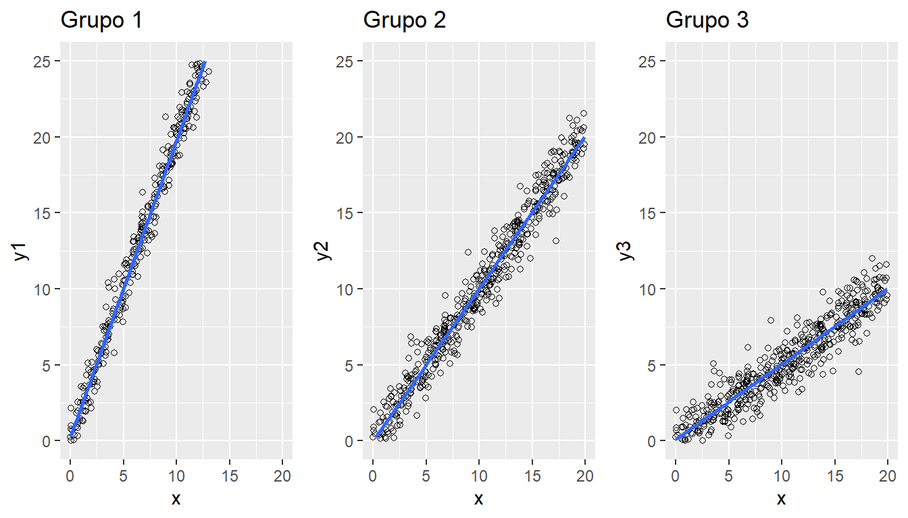

y <- c(32, 34, 46, 89, 35)
x <- c(52, 60, 75, 100, 50)
B <- sum(y) / sum(x)
B[1] 0.7Naturalmente, el investigador está interesado en encontrar las propiedades estadísticas de un estimador. Si éste tiene una forma lineal, no se necesitan nuevas herramientas. Sin embargo, los parámetros que se encuentran en la práctica corresponden a funciones no lineales de totales.
Särndal et al. (1992)
En los capítulos anteriores, nuestra atención estuvo centrada en la búsqueda del mejor diseño de muestreo con los estimadores de Horvitz-Thompson, para muestreo sin reemplazo y estimadores de Hansen-Hurwitz, para muestreo con reemplazo. En nuestra travesía hemos pasado por los diseños de probabilidad fija e igual. Para mejorar la eficiencia de la estrategia hemos revisado los diseños de probabilidades proporcionales y diseños estratificados, con la ayuda de información auxiliar de tipo continuo o discreto. Para mejorar la eficacia del plan operativo y la dispersión de la muestra en la población se han propuesto diseños de muestreo complejos de conglomerados y en varias etapas.
El lector debió notar que en la primera parte de este texto se ha seguido con fidelidad la regla de oro del diseño de encuestas y es utilizar estrategias de muestreo que induzcan probabilidades de inclusión o selección, según sea el caso, proporcionales al valor de la característica de interés. De este modo, si la encuesta está enfocada en una característica de interés cuya dispersión es muy baja, como el número de hijos en niveles socioeconómicos altos, que generalmente no es mayor a tres, es posible utilizar un muestreo aleatorio con probabilidades simples. De otra manera y con la ayuda de información auxiliar, es posible seguir la regla de oro mediante la construcción de probabilidades proporcionales en la etapa de diseño. Sin embargo, esta ventaja del marco de muestreo no sólo se puede utilizar en la etapa de diseño sino también en la etapa de estimación.
Siguiendo la filosofía del título que lleva este texto, nos encaminaremos en la búsqueda de la mejor estrategia de muestreo mejorando el estimador. En esta etapa del camino, se supone que el lector conoce el comportamiento estructural de la población y está en capacidad de proponer el mejor diseño de muestreo, de acuerdo a la generosidad del marco de muestreo.
Por supuesto, en algunos estudios multi-propósito, en encuestas complejas y en casos particulares, es necesario obtener estimaciones para parámetros diferentes a los totales. Por ejemplo, razones de dos características de interés, medianas y percentiles poblacionales, parámetros de regresión, coeficientes de correlación, varianzas, covarianzas, índices, etc. Como lo afirma Bautista (1998), la metodología que se propone para estimar estos parámetros poblacionales es reescribirlos como función de totales poblacionales. Así, si el parámetro a estimar es \(B\), lo debemos llevar a la siguiente forma \[ B=f(t_1, t_2,\ldots,t_Q) \] Donde cada \(t_q\) \(q=1,\ldots,Q\) representa un total de las características de interés o un total de una función de las características de interés. El principio de estimación de este parámetro está en obtener estimadores insesgados \(\hat{t}_q\) \(q=1,\ldots,Q\) tal que \(T\) es estimado por \[ \hat{B}=f(\hat{t}_1, \hat{t}_2,\ldots,\hat{t}_Q) \] Nótese que la función \(f\) puede ser lineal o no. Un resultado muy conocido de la inferencia estadística clásica nos indica que si la función \(f\) es una función lineal entonces \(B\) toma la forma \[ B=a_0+\sum_{q=1}^Qa_qt_q \] Por tanto, un estimador insesgado de \(B\) está dado por la siguiente expresión \[ \hat{B}=a_0+\sum_{q=1}^Qa_q\hat{t}_q \] Si en la estimación de \(B\) hemos utilizado estimadores de tipo Horvitz-Thompson, entonces es posible escribir (8.1.3) como \[ \hat{B}_{\pi}=a_0+\sum_{k\in S}\frac{E_k}{\pi_k} \] donde \(E_k=\sum_{q=1}^Qa_qy_{qk}\) y el valor del \(k\)-ésimo elemento en la \(q\)-ésima característica de interés está dado por \(y_{jk}\). Siguiendo los principios del estimador de Horvitz-Thompson, la varianza de \(\hat{B}_{\pi}\) se puede expresar como \[ Var(\hat{B}_{\pi})=\sum\sum_U\Delta_{kl}\frac{E_k}{\pi_k}\frac{E_l}{\pi_l}. \] Un estimador insesgado para la expresión (8.0.5) está dada por \[ \widehat{Var}_1(\hat{B}_{\pi})=\sum\sum_S \dfrac{\Delta_{kl}}{\pi_{kl}}\frac{E_k}{\pi_k}\frac{E_l}{\pi_l} \] Nótese que cuando la función \(f\) es lineal no se involucran nuevos principios de estimación. Por el contrario, cuando \(f\) no es lineal, el estimador propuesto es la misma expresión (8.1.2); sin embargo, en algunos casos, no es posible ni calcular, ni estimar la varianza debido a la complejidad matemática teórica del desarrollo y es necesario recurrir a métodos que permitan llegar a una expresión que aproxime la varianza. Es posible aproximar la varianza utilizando las técnicas de linealización para estimar la precisión de estos estimadores. Éstas han sido introducida por Woodruff (1971). Algunas aplicaciones en la teoría de muestreo han sido desarrolladas, entre otros, por Binder (1983) y Deville (1999). El método más común, aunque no el único, es el de linealización por polinomios de Taylor.
En Apostol (1963) (p. 417) se presentan las condiciones para que una función \(f\) se pueda aproximar mediante un polinomio. Entre ellas tenemos que la función \(f\) sea derivable y que sus derivadas deben estar definidas en el punto \(x=a\).
Si una función se puede aproximar mediante un polinomio, entonces éste estará definido por \[ f(x)=f(a)+\frac{f'(a)}{1!}(x-a)+\frac{f''(a)}{2!}(x-a)^2+\ldots+\frac{f^{(n)}}{n!}(x-a)^n+\ldots \] Prueba.
Sea \[ f(x)=c_0+c_1(x-a)+c_2(x-a)^2+\ldots \] Derivando sucesivamente, tenemos \[ \begin{aligned} &f^{(1)}(x)=c_1+2c_2(x-a)+3(x-a)^2+\ldots\\ &f^{(2)}(x)=2c_2+6c_3(x-a)+12c_4(x-a)^2+\ldots\\ &f^{(3)}(x)=6c_3+24c_4(x-a)+60c_5(x-a)^2+\ldots\\ \vdots\\ &f^{(n)}(x)=n!c_n+(n+1)!C_{n+1}(x-a)+(n+2)!C_{n+2}(x-a)^2+\ldots \end{aligned} \] Haciendo \(x=a\) tenemos \[ \begin{aligned} &f(a)=c_0 &f^{(1)}(a)=c_1\\ &f^{(2)}(a)=2c_2 &f^{(3)}(a)=6c_3 \end{aligned} \] y en general \(f^{(n)}(x)=n!c_n\). Sustituyendo en (8.1.9), se llega a la aproximación mediante polinomios de Taylor como en (8.1.8).
Para funciones vectoriales, existe el siguiente teorema de Taylor
Para una función vectorial \(f\), se tiene que la aproximación de Taylor de primer orden de la función \(f\) en un punto (vectorial) \(\mathbf{a}\) está dada por \[ f(\mathbf{x})\cong f(\mathbf{a})+(\left.\nabla f\right|_{\mathbf{x}=\mathbf{a}})'(\mathbf{x}-\mathbf{a}), \] con \(\mathbf{x}=(x_1,\cdots,x_Q)'\) y \(\nabla f\) denota el gradiente de la función \(f\); esto es, el \(q\)-ésimo componente de \(\nabla f\) está dado por \[ \frac{\partial f(x_1,\cdots,x_Q)}{\partial x_q}. \]
Es posible representar a la función \(\sin(x)\) en series de potencias de \(x\) (es decir en el punto \(a=0\)). Para este caso particular se tiene que: \[ \begin{aligned} &f(x)=\sin(x) &f(0)=0&\\ &f^{(1)}(x)=\cos(x) &f^{(1)}(0)=1\\ &f^{(2)}(x)=-\sin(x) &f^{(2)}(0)=0\\ &f^{(3)}(x)=-\cos(x) &f^{(3)}(0)=-1\\ &f^{(4)}(x)=\sin(x) &f^{(4)}(0)=0\\ &\vdots &\vdots \end{aligned} \] Por tanto, el desarrollo de la función en series es de la siguiente manera: \[ \begin{aligned} \sin(x)&=0+x+\frac{0}{2!}x^2+\frac{-1}{3!}x^3+\frac{0}{4!}x^4+\frac{1}{5!}x^5+\ldots\\ &=x+\frac{-1}{3!}x^3+\frac{1}{5!}x^5+\ldots\\\\ &=\sum_{n=1}^\infty \frac{(-1)^{n+1}}{(2n-1)!}x^{(2n-1)} \end{aligned} \] Sin embargo, no solamente debemos revisar si la función y sus derivadas están definidas en un punto \(x=a\), también debemos revisar la convergencia de la serie de potencias. Para esto utilizaremos la prueba de convergencia de la razón definido en Apostol (1963) (p. 363). Esta prueba argumenta que si el resultado de \(R\), definido por \[ R=\lim_{n\rightarrow\infty}\left|\frac{S_{n+1}}{S_n}\right|, \] es menor que uno, entonces la serie converge absolutamente. Para este ejemplo particular, tenemos que \[ \begin{aligned} R&=\lim_{n\rightarrow\infty}\left|\frac{(-1)^{(n-1)+1}x^{2(n+1)-1}}{(2(n+1)-1)!}\Bigg/\frac{(-1)^{n-1}x^{2n-1}}{(2n-1)!}\right|\\ &=\lim_{n\rightarrow\infty}\left|\frac{x^{2n+1}}{(2n+1)!}\frac{(2n-1)!}{x^{2n-1}}\right|\\ &=x^2\lim_{n\rightarrow\infty}\left|\frac{1}{2n(2n+1)}\right|=0 \end{aligned} \] Por lo tanto, la serie converge absolutamente y tendríamos una buena aproximación a \(f(x)=sin(x)\) al cortar la serie y dejar un residuo que sería despreciable.
Mediante esta técnica es posible aproximar la varianza de los estimadores que no son funciones lineales de totales. Aunque en el ámbito de la inferencia en poblaciones finitas, no existe una teoría asintótica unificada, sí existen resultados particulares para los diseños de muestreo más simples (Madow 1948) y para algunos diseños de muestreo con probabilidades proporcionales (Rosén 1972). Lohr (2000) plantea los siguientes pasos para construir un estimador linealizado de la varianza de una función no lineal de totales: - Expresar el estimador del parámetro de interés \(\hat{B}\) como una función de estimadores de totales insesgados. Así, \(\hat{B}=f(\hat{t}_1, \hat{t}_2,\ldots,\hat{t}_Q)\). - Determinar todas las derivadas parciales de \(f\) con respecto a cada total estimado \(\hat{t}_{q,\pi}\) y evaluar el resultado en las cantidades poblacionales \(t_q\). Así \[ a_q=\left.\dfrac{\partial f(\hat{t}_1,\ldots,\hat{t}_Q)}{\partial \hat{t}_{q}}\right|_{\hat{t}_1=t_1,\ldots,\hat{t}_Q=t_Q} \] - Aplicar el teorema de Taylor para funciones vectoriales para linealizar la estimación \(\hat{B}\) con \(\mathbf{a}=(t_1,t_2,\cdots,t_Q)'\). En el paso anterior, se vio que \(\nabla\hat{B}'=(a_1,\cdots,a_Q)\). Por consiguiente se tiene que \[ \hat{B}=f(\hat{t}_1,\ldots,\hat{t}_Q) \cong B+\sum_{q=1}^Qa_q(\hat{t}_{q}-t_q) \] - Definir una nueva variable \(E_k\) con \(k\in S\) al nivel de cada elemento observado en la muestra aleatoria. \[ E_k=\sum_{q=1}^Qa_qy_{qk} \tag{8.1}\] - De (8.1.12) y (8.1.13) se tiene que, si los estimadores \(\hat{t}_{q}\) son estimadores de Horvitz-Thompson, una expresión que aproxima la varianza de \(\hat{B}\) está dada por \[ \begin{aligned} AVar(\hat{B})&=Var\left(\sum_{q=1}^Qa_q\hat{t}_{q,\pi}\right)\\ &=Var\left(\sum_S\frac{E_k}{\pi_k}\right)=\sum\sum_U\Delta_{kl}\frac{E_k}{\pi_k}\frac{E_l}{\pi_l}. \end{aligned} \] Para encontrar una estimación de la varianza de \(\hat{B}\), no es posible utilizar directamente los valores \(E_k\), porque éstos dependen de los totales poblacionales, pues las derivadas \(a_q\) se evalúan en los totales poblacionales que son desconocidos. Por consiguiente, los valores \(E_k\) se aproximan reemplazando los totales desconocidos por los estimadores de los mismos. Siendo \(e_k\) la aproximación de la variable linealizada dada por \[ e_k=\sum_{q=1}^Q\hat{a}_qy_{qk} \tag{8.2}\] donde \(\hat{a}_q\) corresponde a un estimador de \(a_q\). Por otro lado, Deville (1999) ha probado que la aproximación de la varianza lograda mediante \(e_k\) es válida para grandes tamaños de muestra. Si los estimadores \(\hat{t}_{q}\) son estimadores de Horvitz-Thompson, se puede usar de manera general el estimador de la varianza de Horvitz-Thompson, así \[ \widehat{Var}(\hat{t}_{y,\pi})=\sum\sum_S \dfrac{\Delta_{kl}}{\pi_{kl}}\frac{e_k}{\pi_k}\frac{e_l}{\pi_l} \] Como siempre, si el diseño de muestreo es de tamaño fijo, se pueden utilizar las respectivas expresiones dadas en el capítulo 2 de este texto. Särndal et al. (1992) advierten que este método tiende a sub-estimar la varianza real cuando el tamaño de muestra es pequeño. Por otra parte, una desventaja de este método es la particularidad de cada aproximación sujeta a la forma funcional del parámetro de interés. De esta manera, es necesario determinar expresiones analíticas particulares. Esto genera desgaste cuando se trabaja con encuestas complejas. El siguiente resultado resume el proceso de inferencia general para la estimación de una función linealizada de totales.
Siendo \(B=f(t_1, t_2,\ldots, t_Q)\) es una función de totales poblacionales, entonces un estimador aproximadamente insesgado de \(B\), su varianza aproximada y una estimación insesgada para esta última están dadas por las siguientes expresiones \[ \hat{B}_{\pi}=f(\hat{t}_{1,\pi}, \hat{t}_{2,\pi},\ldots,\hat{t}_{Q,\pi}) \]\[ AVar(\hat{B}_\pi)=\sum\sum_U\Delta_{kl}\frac{E_k}{\pi_k}\frac{E_l}{\pi_l} \]\[ \widehat{Var}(\hat{B}_\pi)=\sum\sum_S \dfrac{\Delta_{kl}}{\pi_{kl}}\frac{e_k}{\pi_k}\frac{e_l}{\pi_l} \] respectivamente, con \(\hat{t}_{q,\pi}\) el estimador de Horvitz-Thompson de \(t_{q,\pi}\) y tanto \(E_k\) como \(e_k\) se encuentran dados por las fórmulas (ecuación 8.1) y (ecuación 8.2), en estricto orden.
Prueba.
En primer lugar, \[ \begin{aligned} E(\hat{B}_{\pi})&\cong E(B+\sum_{q=1}^Qa_q(\hat{t}_{q}-t_q))\\ &=B+\sum_{q=1}^Qa_qE(\hat{t}_{q}-t_q)\\ &=B \end{aligned} \] puesto que \(\hat{t}_{q}\) es insesgado para \(t_q\), para \(q=1,\cdots,Q\). Por otro lado, \[ \begin{aligned} Var(\hat{B}_\pi)&=Var(\sum_{q=1}^Qa_q\hat{t}_q)\\ &=Var(\sum_{q=1}^Qa_q\sum_{k\in S}\frac{y_{qk}}{\pi_k})\\ &=Var(\sum_{k\in S}\frac{E_k}{\pi_k})\\ &=\sum\sum_U\Delta_{kl}\frac{E_k}{\pi_k}\frac{E_l}{\pi_l} \end{aligned} \]
Un caso especial de una función no-lineal de totales es la razón poblacional \(B\). Ésta se define como el cociente de dos totales poblacionales de características de interés \(z\) e \(y\). Así \[
B=\dfrac{t_y}{t_z}=\dfrac{\bar{y}_U}{\bar{z}_U}
\] Lohr (2000) plantea que técnicamente siempre se estimará una razón cuando se estime un promedio de un dominio. Nótese que la característica de la razón es que tanto el denominador como el numerador son desconocidos, y aunque se conocieran, se prefieren estimar. Bautista (1998) da ejemplos muy concretos en lo que se utilizó la estimación de razones. Entre ellos están los siguientes: - Estudios electorales: para estimar la intención de voto por un candidato se pregunta por qué candidato votaría el encuestado1. Dado que no todas las personas entrevistadas pueden votar, incluso algunos de ellos decidirán no votar por omisión. El numerador de esta razón está dado por el total de personas que votarían por el candidato, mientras que el denominador de la razón sería el total de personas que participarían activamente en las elecciones. Nótese que la tasa de abstención también está dada por una razón. El numerador correspondería al total de personas que, sin tener restricción alguna, han decidido no participar en las elecciones. El denominador estaría dado por el total de personas que están aptas para votar. - Investigación de medios: es importante para los canales de televisión tener un estimativo del total de personas observan algún programa de televisión en determinado momento. Con esta información, los canales cobran más o menos dinero a las empresas que deseen pautar un comercial a determinada hora. Si el programa televisivo tiene una audiencia alta, el canal cobrará más por la pauta de un comercial. Para estandarizar esta información, se ha creado un índice llamado <
Para la estimación de razones se propone el siguiente resultado que da cuenta de las expresiones teóricas que deben utilizarse para tal fin.
Un estimador para la razón poblacional \(B\) de dos características de interés, su varianza y su varianza estimada están dados por \[ \hat{B}=\dfrac{\hat{t}_{y,\pi}}{\hat{t}_{z,\pi}} \]\[ AVar(\hat{T}_{\pi})=\sum\sum_U\Delta_{kl}\frac{E_k}{\pi_k}\frac{E_l}{\pi_l}. \]\[ \widehat{Var}(\hat{t}_{y,\pi})=\sum\sum_S \dfrac{\Delta_{kl}}{\pi_{kl}}\frac{e_k}{\pi_k}\frac{e_l}{\pi_l} \] donde \(E_k=\dfrac{1}{t_x}(y_k-Bz_k)\) y \(e_k=\dfrac{1}{\hat{t}_{z,\pi}}(y_k-\hat{B}z_k)\) Nótese que \(\hat{B}\) es aproximadamente insesgado para \(B\) al igual que \(\widehat{Var}(\hat{t}_{y,\pi})\) lo es para \(AVar(\hat{t}_{y,\pi})\)
Prueba.
Siguiendo los pasos de linealización de la sección anterior tenemos que el estimador propuesto es una función de dos totales estimados de las características de interés \[ \hat{B}=\dfrac{\hat{t}_{y,\pi}}{\hat{t}_{z,\pi}}=f(\hat{t}_{y,\pi},\hat{t}_{z,\pi}) \] Calculando las derivadas parciales \[ \begin{aligned} a_1&=\left.\dfrac{\partial f(\hat{t}_{y,\pi},\hat{t}_{z,\pi})}{\partial \hat{t}_{y,\pi}}\right|_{\hat{t}_{y,\pi}=t_y,\hat{t}_{z,\pi}=t_z}\\ &=\frac{1}{t_z}\\ a_2&=\left.\dfrac{\partial f(\hat{t}_{y,\pi},\hat{t}_{z,\pi})}{\partial \hat{t}_{z,\pi}}\right|_{\hat{t}_{y,\pi}=t_y,\hat{t}_{z,\pi}=t_z}\\ &=-\frac{t_y}{t_z^2} \end{aligned} \] Utilizando la aproximación de la razón mediante la expresión (8.1.12) se tiene que \[ \hat{B}=B+\frac{1}{t_z}(\hat{t}_{y,\pi}-t_y)-\frac{t_y}{t_z^2}(\hat{t}_{z,\pi}-t_z) \] por tanto al evaluar la esperanza se tiene inmediatamente la propiedad del insesgamiento aproximado. Por otro lado, definiendo la nueva variable linealizada dada en (8.1.14), tenemos que \[ E_k=\dfrac{y_k}{t_z}-\frac{t_y}{t_z^2}z_k=\frac{1}{t_z}(y_k-Bz_k) \] cuya aproximación es \[ e_k=\frac{1}{\hat{t}_{z,\pi}}(y_k-\hat{B}z_k) \] Por tanto la varianza se escribe como \[ AVar(\hat{B})=Var\left(\sum_S\frac{E_k}{\pi_k}\right) \] Utilizando los principios del estimador de Horvitz-Thompson se llega a los resultados de la aproximación de la varianza y de la varianza estimada.
No es difícil probar que cualquiera que sea el diseño de muestreo utilizado siempre se cumplen las siguientes condiciones \[ \begin{aligned} \sum_UE_k&=0\\ \sum_S\frac{e_k}{\pi_k}&=0 \end{aligned} \] ### Propiedades
Aunque la característica del insesgamiento es deseada en los estimadores, no se debe exagerar descartando algunos estimadores que tengan un poco de sesgo. En algunos casos la forma funcional del parámetro de interés es tan compleja que resulta muy complicado obtener un estimador exactamente insesgado. Por otro lado, puede existir un estimador con poco sesgo y con menor error cuadrático medio que un estimador insesgado. De hecho, Särndal et al. (1992) afirman que son muchos los estimadores aproximadamente insesgados que se utilizan en la práctica. También afirma que se debe mantener siempre presente la regla de Hájek que proclama que:
Los estimadores con un sesgo considerable son pobres sin importar qué otras propiedades puedan tener.
Como esta clase de estimadores son aproximadamente insesgados, es necesario evaluar otro tipo de bondades como la consistencia dada en la siguiente definición.
Un estimador \(\hat{T}\) es consistente en el sentido Cochran para un parámetro de interés \(T\) si \(s=U\) implica que el estimador reproduce el parámetro de interés. Es decir \(\hat{T}=T\).
Nótese que bajo la clase de diseños MAS, el estimador de Horvitz-Thompson es consistente pues si \(s=U\), entonces \(\pi_k=1\), por lo tanto \[ \begin{aligned} \hat{t}_{y,\pi}=\sum_{k \in s}\frac{y_k}{\pi_k}=\sum_{k \in U}{y_k}=t_y \end{aligned} \] Sin embargo, bajo el diseño de Bernoulli, el estimador de Horvitz-Thompson no conserva la propiedad de consistencia. Suponga que las probabilidades de inclusión de primer orden están dadas por \(\pi=0.1\). El evento \(s=U\) ocurre con probabilidad \(0.1^N\), para el cual el estimador de Horvitz-Thompson tomaría la siguiente forma \[ \begin{aligned} \hat{t}_{y,\pi}=\sum_{k \in s}\frac{y_k}{0.1}=10\times t_y \end{aligned} \] Nótese que bajo este escenario, él estimador de razón \(\hat{B}\) es consistente.
Los principios del estimador de Horvitz-Thompson se establecen para llegar a una aproximación y estimación de la varianza del estimador. Para los siguientes diseños de muestreo se tienen las siguientes propiedades
Para este diseño de muestreo en particular las probabilidades de inclusión de primer orden están dadas por \(\pi_k=\frac{n}{N}\). Los estimadores de Horvitz-Thompson para las dos características de interés están dados por \(\hat{t}_{y,\pi}=N\bar{y}_S\) y \(\hat{t}_{z,\pi}=N\bar{z}_S\). Por lo tanto se tiene el siguiente resultado.
Bajo muestreo aleatorio simple, el estimador de la razón poblacional \(B\), su varianza y su varianza estimada están dados por \[ \hat{B}=\dfrac{\bar{y}_S}{\bar{z}_S} \]\[ AVar_{MAS}(\hat{B})=\frac{N^2}{n}\left(1-\frac{n}{N}\right)S^2_{EU} \]\[ \widehat{Var}_{MAS}(\hat{B})=\frac{N^2}{n}\left(1-\frac{n}{N}\right)S^2_{es} \] respectivamente, con \(S^2_{EU}\) y \(S^2_{es}\) el estimador de la varianza de los valores de la variable linealizada \(E\) y su aproximación \(e\) en el universo \(U\) y en la muestra \(s\). Recuerde que \(E_k=\dfrac{1}{t_x}(y_k-Bz_k)\) y \(e_k=\dfrac{1}{\hat{t}_{z,\pi}}(y_k-\hat{B}z_k)\).
Para este diseño de muestreo los estimadores de Horvitz-Thompson para las dos características de interés están dados por \(\hat{t}_{y,\pi}=(N_I/n_I)\sum_{i\in S_I}N_i\bar{y}_{S_i}\) y \(\hat{t}_{z,\pi}=(N_I/n_I)\sum_{i\in S_I}N_i\bar{z}_{S_i}\). Se tiene el siguiente resultado.
Bajo muestreo aleatorio simple, el estimador de la razón poblacional \(B\), su varianza y su varianza estimada están dados por \[ \hat{B}=\dfrac{\sum_{i\in S_I}N_i\bar{y}_{S_i}}{\sum_{i\in S_I}N_i\bar{z}_{S_i}} \]\[ AVar_{MM}(\hat{B})=\frac{N_{I}^2}{n_{I}}\left(1-\frac{n_{I}}{N_{I}}\right)S^2_{t_{E}U_I}+ \frac{N_{I}}{n_{I}}\sum_{i\in U_{I}}\frac{N_i^2}{n_i}\left(1-\frac{n_i}{N_i}\right)S^2_{y_{E_i}} \]\[ \widehat{Var}_{MM}(\hat{B})=\frac{N_{I}^2}{n_{I}}\left(1-\frac{n_{I}}{N_{I}}\right)S^2_{\hat{t}_{e}S_I}+ \frac{N_{I}}{n_{I}}\sum_{i\in S_{I}}\frac{N_i^2}{n_i}\left(1-\frac{n_i}{N_i}\right)S^2_{e_{S_i}} \] respectivamente. Donde \(S^2_{t_{E}U_I}\) es la varianza poblacional de los totales \(t_{Ei}\) \(i\in U_I\) de todas y cada una de las unidades primarias de muestreo y \(S^2_{E_{U_i}}\) es la varianza poblacional entre los valores de la variable \(E\) que toman los elementos dentro de cada unidad primaria de muestreo. El razonamiento es similar con las cantidades \(S^2_{\hat{t}_{e}s_I}\) y \(S^2_{y_{e_i}}\).
Siguiendo con la regla de oro de la estimación de totales, tanto en estrategias que utilicen diseños de muestreos sin reemplazo como Poisson o \(\pi\)PT junto con el estimador de Horvitz-Thompson y en diseños de muestreo con reemplazo junto con el estimador de Hansen-Hurwitz, era conveniente que el marco de muestreo adjuntara información auxiliar de tipo continuo para poder construir las probabilidades de inclusión o de selección según el caso.
Por supuesto, en este contexto particular de estimación de razones, el marco de muestreo debe ser aún más generoso tanto así que permita la inclusión de información auxiliar continua que deberá estar correlacionada no con las características de interés que intervienen en la razón sino con la variable linealizada \(E\). De esta forma, si la variable correlacionada con \(E\) es \(E^*\), entonces las probabilidades óptimas de selección estarían dadas por \[ p_k=\dfrac{E^*_k}{t_{E^*}} \] Un razonamiento similar se hace con los diseños de tamaño fijo que utilizan probabilidades proporcionales.
Uno de los motivos por los cuales se utiliza el estimador \(\hat{B}\) es el desconocimiento del total poblacional \(N\) en la estimación de la media poblacional \(\bar{y}_U\). Incluso si \(N\) es conocido, es preferible ignorarlo como lo demuestra el siguiente ejemplo (Lohr 2000). Suponga que por alguna circunstancia, un extraterrestre desea estimar el número promedio de patas que tiene un perro en una ciudad. La ciudad está dividida en dos áreas geográficas, la zona norte y la zona sur. Para llevar a cabo la estimación, él planea un diseño de muestreo en dos etapas así: De las \(N_I=2\) zonas geográficas de la ciudad va a seleccionar una muestra aleatoria simple de \(n_I=1\) unidades primarias de muestreo. Se sabe que en el norte hay \(N_1=30\) perros y en el sur hay \(N_2=10\) perros. Sea cual sea la unidad primaria seleccionada, se seleccionará una sub-muestra aleatoria simple de \(n_i=2\) perros \(i=1,2\) y se realizará la medición del total de patas en cada perro incluido en la muestra.
Suponga que se ha seleccionado la zona norte. Curiosamente, en esta zona cada uno de los perros tiene igual número de patas, 4. El estimador de Horvitz-Thompson del total de patas en la zona norte está dado por \(\hat{t}_{1y,\pi}=\frac{30}{2}8=120\). Luego un estimador insesgado del número total de patas en la ciudad está dado por \(\hat{t}_{y,\pi}=\frac{2}{1}120=240\). Al dividir esta estimación por el número total de perros en la ciudad encontramos la sorpresa de que la estimación de este promedio es 6. \[ \hat{\bar{y}}_{U,\pi}=\frac{\hat{t}_{y,\pi}}{N}=\frac{240}{40}=6 \] ¡¡¡6 patas!!!. Si la muestra del extraterrestre hubiera consistido en la zona sur, el estimador de Horvitz-Thompson del total de patas en la zona sur estría dado por \(\hat{t}_{2y,\pi}=\frac{10}{2}8=40\). El estimador insesgado del número total de patas en la ciudad estaría dado por \(\hat{t}_{y,\pi}=\frac{2}{1}40=80\). Al dividir esta estimación por el número total de perros en la ciudad encontramos que la estimación de este promedio es \[ \hat{\bar{y}}_{U,\pi}=\frac{\hat{t}_{y,\pi}}{N}=\frac{80}{40}=2 \] Sin embargo, a pesar de estos resultados el estimador es efectivamente insesgado porque la esperanza corresponde al parámetro poblacional pues \((2+6)/2=4\). Seguramente, el extraterrestre no hizo uso de la mejor estrategia de muestreo. No por la escogencia del diseño, que induce probabilidades de inclusión constantes como lo son los valores de la características de interés, sino por el contrario, debido a la escogencia del estimador. Si el estimador utilizado hubiese sido \(\hat{B}=\widetilde{y}_S\), definido en (2.2.15), se encontraría que la estimación sería \[ \widetilde{y}_S=\frac{\hat{t}_{y,\pi}}{\hat{N}}=\frac{240}{60}=4 \] Al seleccionar la zona norte, debido a que \(\hat{N}=\frac{2}{1}30=60\). Ahora, si hubiese sido seleccionada la zona sur, tendríamos que \(\hat{N}=\frac{2}{1}10=20\) y por consiguiente \[ \widetilde{y}_S=\frac{\hat{t}_{y,\pi}}{\hat{N}}=\frac{80}{20}=4 \] Nótese que, para este caso particular, el estimador \(\widetilde{y}_S\) es insesgado y de varianza nula. El siguiente resultado amplia las propiedades de este estimador que en la literatura clásica es llamado promedio muestral ponderado.
Un estimador del promedio poblacional \(\bar{y}_U\), definido como una razón, su varianza y su varianza estimada están dados por \[ \widetilde{y}_S=\dfrac{\hat{t}_{y,\pi}}{\hat{N}_{\pi}}=\sum_S\dfrac{y_k}{\pi_k}\bigg/\sum_S\dfrac{1}{\pi_k}. \]\[ AVar(\widetilde{y}_S)=\frac{1}{N^2}\sum\sum_U\Delta_{kl}\left(\frac{y_k-\bar{y}_U}{\pi_k}\right)\left(\frac{y_l-\bar{y}_U}{\pi_l}\right) \]\[ \widehat{Var}(\widetilde{y}_S)=\frac{1}{\hat{N}^2}\sum\sum_S \dfrac{\Delta_{kl}}{\pi_{kl}}\left(\frac{y_k-\widetilde{y}_S}{\pi_k}\right)\left(\frac{y_l-\widetilde{y}_S}{\pi_l}\right) \] respectivamente.
Este estimador coincide con el estimador clásico \(\bar{y}_S\) en diseños de muestreo como el aleatorio simple o el aleatorio estratificado.
Es la regla, más que la excepción, que el tamaño absoluto \(N_d\) de un dominio en estudio sea desconocido. En la sección 3.2.4. se dieron las bases para la estimación del promedio de la característica de interés en un dominio cuando se usaba muestreo aleatorio simple, en esta sección se darán las pautas necesarias para realizar esta estimación bajo cualquier diseño de muestreo y con el desconocimiento de \(N_d\). Siguiendo con la notación de la sección 3.2.4., en donde se definió la función indicatriz del dominio \(U_d\) dada por (3.2.22) y se construyó la variable \(y_{dk}\), se tienen los siguientes resultados para la estimación de \(N_d\) y para la estimación del total de la característica de interés \(t_{yd}\) en el dominio \(U_d\).
Bajo cualquier diseño de muestreo, el estimador de Horvitz-Thompson para el tamaño absoluto de un dominio \(N_d\), su varianza y su varianza estimada están dados por \[ \hat{N}_{d,\pi}=\sum_S\frac{z_{dk}}{\pi_k} \]\[ Var(\hat{N}_{d,\pi})=\sum\sum_U\Delta_{kl}\frac{z_{dk}}{\pi_k}\frac{z_{dl}}{\pi_l} \]\[ \widehat{Var}(\hat{N}_{d,\pi})=\sum\sum_S \dfrac{\Delta_{kl}}{\pi_{kl}}\frac{z_{dk}}{\pi_k}\frac{z_{dl}}{\pi_l} \] respectivamente.
Bajo cualquier diseño de muestreo, el estimador de Horvitz-Thompson para el total de la característica de interés \(t_{yd}\) en el dominio \(U_d\), su varianza y su varianza estimada están dados por \[ \hat{t}_{yd,\pi}=\sum_S\frac{y_{dk}}{\pi_k} \]\[ Var(\hat{t}_{yd,\pi})=\sum\sum_U\Delta_{kl}\frac{y_{dk}}{\pi_k}\frac{y_{dl}}{\pi_l} \]\[ \widehat{Var}(\hat{t}_{yd,\pi})=\sum\sum_S \dfrac{\Delta_{kl}}{\pi_{kl}}\frac{y_{dk}}{\pi_k}\frac{y_{dl}}{\pi_l} \] respectivamente.
Una vez que los anteriores parámetros son estimados y siguiendo la expresión (3.2.23) para el promedio de un dominio, procedemos a estimarlo mediante el siguiente resultado.
Un estimador del promedio de un dominio \(\bar{y}_{U_d}\), definido como una razón, su varianza y su varianza estimada están dados por \[ \widetilde{y}_S=\dfrac{\hat{t}_{y,\pi}}{\hat{N}_{\pi}}=\sum_S\dfrac{y_{dk}}{\pi_k}\bigg/\sum_S\dfrac{z_{dk}}{\pi_k}. \]\[ AVar(\widetilde{y}_S)=\frac{1}{N_d^2}\sum\sum_U\Delta_{kl}\left(\frac{y_{dk}-\bar{y}_{U_d}}{\pi_k}\right)\left(\frac{y_{dl}-\bar{y}_{U_d}}{\pi_l}\right) \]\[ \widehat{Var}(\widetilde{y}_S)=\frac{1}{\hat{N}_d^2}\sum\sum_S \dfrac{\Delta_{kl}}{\pi_{kl}}\left(\frac{y_{dk}-\widetilde{y}_{S_d}}{\pi_k}\right)\left(\frac{y_l-\widetilde{y}_{S_d}}{\pi_l}\right) \] respectivamente.
En el caso específico de muestreo aleatorio simple tenemos que la expresión del estimador alternativo del promedio del dominio dada por (3.2.26) coincide con los anteriores resultados.
Suponga que para la población de ejemplo \(U\) se tiene el conocimiento de cada valor de las características de interés x e y. De tal forma que la razón poblacional entre las dos es 0.7 como lo muestra la siguiente salida.
y <- c(32, 34, 46, 89, 35)
x <- c(52, 60, 75, 100, 50)
B <- sum(y) / sum(x)
B[1] 0.7Con una muestra aleatoria simple de \(n=2\), realice el cálculo léxico-gráfico del estimador de la razón \(\hat{B}\). Repita el ejercicio con una muestra de \(n=4\) y, por último, con una enumeración completa o censo. Concluya que este estimador es consistente.
Siguiendo con el estudio del sector industrial y con base en las anteriores investigaciones, el gobierno quiere estimar la razón entre el ingreso total del sector industrial con respecto al número de trabajadores del mismo. El anterior es un índice de productividad del sector y describe cuánta ganancia le aporta un sólo empleado al sector. Para el gobierno este índice es importante pues con él se construyen políticas de distribución y apoyo financiero entre los sectores económicos del país.
data(BigLucy)
ty <- sum(BigLucy$Income)
tz <- sum(BigLucy$Employees)
B <- ty / tz
B[1] 6.8En terminos poblacionales, si hubiesemos realizado un censo, este parámetro sería igual a 6.79. En los capítulos anteriores hemos aprendido cómo sacar muestras y realizar el proceso de estimación para las estrategias propuestas. En este capítulo vamos a hacer uso de las funciones ya establecidas en el paquete TeachingSampling para calcular las estimaciones y estimar las respectivas varianzas. Suponga que se utilizó un diseño de muestreo aleatorio simple y que la muestra seleccionada está dada en la respectiva sección de Marco y Lucy en el segundo capítulo de este texto. Con ayuda de las funciones S.SI y E.SI del paquete TeachingSampling2 se realiza la selección de la muestra y la estimación de los totales, respectivamente. Después de seleccionar la muestra, procedemos a estimar el total poblacional con la función pertinente. Recuérdese que la salida de la función de estimación es de la siguiente forma
> E.SI(N, n, característica)
N característica
Estimation Posición 1,1 Posición 1,2
Standard Error Posición 2,1 Posición 2,2
CVE Posición 3,1 Posición 3,2
DEFF Posición 4,1 Posición 4,2Una vez ajustados los parámetros de la función se ingresan los valores de la característica de interés y el resultado de la función es una matriz de estimaciones. En la Posición 1,2 encontramos la estimación del total, en la Posición 2,2 encontramos la raiz cuadrada de la varianza estimada y en la Posición 3,2 encontramos el coeficiente de variación estimado. Para tener acceso a cada uno de estos datos de manera independiente es necesario indexar la función, de esta manera si se quiere tener solamente la estimación del total poblacional de la característica ingreso es necesario escribir el siguiente comando: E.SI(N,n,Income)[1, 2].
En donde el índice [1, 2] implica el primer elemento de la función. Para lograr la estimación de la razón entre las características Ingreso y Empleados debemos estimar sus respectivos totales con ayuda de la función E.SI y realizar el cociente entre ellos.
N <- dim(BigLucy)[1]
n <- 2000
sam <- S.SI(N, n)
muestra <- BigLucy[sam, ]
ty.est <- E.SI(N, n, muestra$Income)[1, 2]
tz.est <- E.SI(N, n, muestra$Employees)[1, 2]
B.est <- ty.est / tz.est
B.est[1] 6.7Aunque se dispone de la estimación debemos realizar la estimación de la aproximación de la varianza. Para este propósito creamos las variables \(e_k\) \(k\in S\) e introducimos sus valores en la función E.SI para llegar a la estimación de la varianza. Como se mencionó anteriormente, este valor de la estimación de la varianza se encuentra indexado en la segunda posición de la función.
ek <- (1 / tz.est) * (muestra$Income - B.est * muestra$Employees)
Asd <- E.SI(N, n, ek)[2, 2]
cve <- 100 * Asd / B.est
cve[1] 1.1El resultado de la estimación se presenta en la tabla 8.1. Nótese que el valor estimado se encuentra muy cerca del parámetro de interés.
| B | B.est | cve | Asd |
|---|---|---|---|
| 6.8 | 6.7 | 1.1 | 0.07 |
Por tanto se estima que cada empleado aportó réditos en el sector industrial hasta por un monto de 6.92 millones de dólares en el último año fiscal. Resultaría interesante saber si esta razón es constante para cada nivel del sector o si se presentan diferencias en la razón para cada estrato. Este tema será tratado en el próximo capítulo.
Al meditar en la confiabilidad y precisión del estimador de la razón, surge la siguiente pregunta: ¿es aplicable el uso del teorema del límite central en la estimación por razones?
Siguiendo con los resultados empíricos, en esta sección se realiza una simulación de Monte Carlo, de tamaño 2000, con las variables Ingreso y Empleados. Para cada simulación, se selecciona una muestra y se estima la razón pertinente. El resultado de la simulación es un conjunto de 2000 estimaciones que se plasmaron en histogramas. El ejercicio se realizó para tamaños de muestra 2, 5, 20, 50, 200 y 1000. El resultado gráfico de la simulación se muestra en la siguiente figura.
data(BigLucy)
N <- dim(BigLucy)[1]
nsim <- 2000
Bk<-rep(0, nsim)
Razon<-function(n){
for(m in 1:nsim){
sam <- sample(N, n)
x <- BigLucy$Income[sam]
z <- BigLucy$Employees[sam]
B<-mean(x)/mean(z)
Bk[m]<-B
}
return(Bk)
}
Simus <- data.frame(Razon(2), Razon(5), Razon(20),
Razon(50), Razon(200), Razon(1000))
p1 <- ggplot(data=Simus, aes(x=Razon.2.)) +
geom_histogram(aes(y = after_stat(density)), alpha=.5) + geom_density()
p2 <- ggplot(data=Simus, aes(x=Razon.5.)) +
geom_histogram(aes(y = after_stat(density)), alpha=.5) + geom_density()
p3 <- ggplot(data=Simus, aes(x=Razon.20.)) +
geom_histogram(aes(y = after_stat(density)), alpha=.5) + geom_density()
p4 <- ggplot(data=Simus, aes(x=Razon.50.)) +
geom_histogram(aes(y = after_stat(density)), alpha=.5) + geom_density()
p5 <- ggplot(data=Simus, aes(x=Razon.200.)) +
geom_histogram(aes(y = after_stat(density)), alpha=.5) + geom_density()
p6 <- ggplot(data=Simus, aes(x=Razon.1000.)) +
geom_histogram(aes(y = after_stat(density)), alpha=.5) + geom_density()
grid.arrange(p1, p2, p3, p4, p5, p6, ncol = 3)
Para las primeras simulaciones, en donde el tamaño de muestra es pequeño, se nota que la distribución de la razón es sesgada a la derecha y, a medida que el tamaño de muestra crece, la distribución se torna simétrica con respecto al verdadero valor. Por lo anterior, empíricamente y para este ejemplo en particular, se ha probado que la razón entre estas dos características converge a una distribución normal a medida que el tamaño de muestra se incrementa.
Una medida de tendencia central comúnmente utilizada es la mediana. Esta medida de centralidad, a diferencia del promedio poblacional, no es fácilmente influenciada por datos atípicos cuando el tamaño poblacional es pequeño y, por esto, se conoce como una medida robusta. La mediana es el valor \(M\) que divide la población en dos mitades. Por tanto, la mitad de los valores de la característica de interés estará por encima de \(M\) y la otra mitad estará por debajo de \(M\). La construcción de esta y otras estimaciones tiene como base la función de distribución poblacional \(F(\cdot)\).
Para cualquier valor \(y\), la función de distribución poblacional \(F(y)\) es la proporción de elementos en la población para los cuales se cumple que \(y_k\leq y\). Esta función creciente puede escribirse como \[ F(y)=\dfrac{\#A_y}{N} \] con \(A_y\) dado por \[ A_y=\{ k \mid y_k\leq y, k\in U\} \]
De la anterior definición resulta claro que cualquier percentil3 \(Q_q\) con \(0 \leq q \leq 1\) se puede escribir en función de \(F(\cdot)\). De esta manera, se tiene que \[ Q_q=F^{-1}(q) \] En particular la mediana puede escribirse como \(M=Q_{0.5}=F^{-1}(0.5)\). Cuando se ha realizado un diseño de muestreo y la información de la muestra seleccionada es registrada, el procedimiento genérico para la estimación de cualquier percentil sugerido en Särndal et al. (1992) (p. 197) consta de los siguientes pasos: - Obtener la función de distribución estimada con los datos de la característica de interés \(\widehat{F}(y)\) - Estimar el percentil mediante \(\widehat{F}^{-1}(q)\). En particular la estimación de la mediana estaría dada por \(\widehat{F}^{-1}(0.5)\).
Como lo indican los siguiente resultados no se involucran nuevos principios de estimación en el paso 1 del anterior numeral. El procedimiento para estimar la función de distribución puede verse como la estimación de la media poblacional de la variable \(z_y\) que para el \(k\)-ésimo elemento de la población está definida como \[ z_{yk}= \begin{cases} 1 &\text{si } y_k\leq y\\ 0 &\text{en otro caso} \end{cases} \]
La función de distribución poblacional puede escribirse como una función de totales, específicamente como un promedio poblacional y está dada por \[ \bar{z}_{yU}=\frac{t_{z_y}}{N}=\frac{1}{N}\sum_Uz_{yk}=F(y) \]
Un estimador de la mediana poblacional \(M\) está dado por \(\hat{M}\) \[ \hat{M}=\widehat{F}^{-1}(0.5), \] donde \(\widehat{F}^{-1}\) es la función inversa de \(\widehat{F}(y)\) dada por \[ \begin{aligned} \widehat{F}(e)&=\frac{\hat{t}_{z_y,\pi}}{\hat{N}}\\ &=\sum_S\frac{z_{yk}}{\pi_k}\left(\sum_S\frac{1}{\pi_k}\right)^{-1} \end{aligned} \]
Esta forma de estimación de la mediana arroja los mismos resultados que la estimación de una mediana ponderada4 por los factores de expansión dados por \(1/\pi_k\) \(k\in S\). Con este razonamiento concluimos que para los diseños de muestreo que inducen probabilidades de inclusión iguales para cada elemento de la población la estimación de la mediana corresponderá a la mediana de los valores de la característica de interés en la muestra.
Por tanto, si los valores de la característica de interés en la muestra realizada son \(\{1,2,3\}\) y cada elemento del anterior conjunto está ponderado por su respectivo factor de expansión dado por \(\{4,1,1\}\), entonces la mediana estimada coincide con la mediana ponderada5 que es igual a la mediana del siguiente conjunto \(\{\underbrace{1,1,1,1}_{4},\underbrace{2}_{1},\underbrace{3}_{1}\}\), es decir la mediana es uno.
Para la población de ejemplo \(U\) la mediana poblacional es 35 como lo muestra la siguiente salida.
y <- c(32, 34, 46, 89, 35)
median(y)[1] 35Si el vector de probabilidades de inclusión, inducido por un diseño \(p(\cdot)\) de tamaño de muestra fijo e igual \(n=4\), y los factores de expansión están dados por
pik <- c(1, 0.5, 1, 1, 0.5)
fk <- 1 / pik
fk[1] 1 2 1 1 2Una posible muestra perteneciente al soporte \(Q\) de este diseño de muestreo es \[ s_1=\{\text{Yves, Ken, Erik, Sharon}\} \] Por tanto la estimación de la mediana para los datos de esta muestra particular será 34 puesto que
w <- c(32, 34, 34, 46, 89)
median(w)[1] 34¿Cuántas posible muestras tienen probabilidad no nula? Especifique el soporte \(Q\) y mediante un cálculo léxico-gráfico concluya acerca del sesgo y de la consistencia del estimador \(\hat{M}\).
El gobierno, en su intención de realizar un acercamiento al comportamiento central de las características de interés planeó la investigación de la sección 4.2.4. en donde se planeó un diseño de muestreo con probabilidad proporcional de selección PPT con un tamaño de muestra \(m=400\). En esta ocasión se usó el conocimiento de la característica de interés Income para crear las probabilidades de selección de los elementos. Los resultados de la estimación de los totales son verdaderamente cercanos al parámetro de interés por la gran correlación de las probabilidades con las características de interés.
Sin embargo, los investigadores asociados con este proyecto descubren que el comportamiento estructural de la información auxiliar continua Ingreso está influenciado por puntos extremos como se puede ver en la siguiente figura. Por otra parte, se sabe que la correlación entre las características de interés y la información auxiliar es grande, y se supone que el comportamiento estructural de éstas también debe ser muy disperso. Por tanto como medida de centralidad se ha tomado la decisión de trabajar con la mediana porque es una medida robusta.
ggplot(BigLucy, aes(x = factor(0), y = Income)) + geom_boxplot() + xlab("") + coord_flip()
Income.
Una vez que se ha tomado la muestra, siguiendo los pasos de la sección 4.2.4. y con la ayuda de las funciones S.PPS y E.PPS se utiliza la función E.Quantile del paquete TeachingSampling para estimar la mediana con la información recolectada en la muestra.
data(BigLucy)
m <- 2000
res <- S.PPS(m, BigLucy$Income)
sam <- res[,1]
muestra <- BigLucy[sam,]La naturaleza de este ejercicio es muy interesante porque se trata de un diseño con reemplazo. Una vez que la muestra es seleccionada es necesario extraer el vector de probabilidades de selección para las empresas seleccionadas en la muestra. La función E.Quantile consta de tres parámetros, y que, como de costumbre, es el conjunto de datos conteniendo la información recolectada en la muestra para la(s) característica(s) de interés, per que es el percentil de interés y toma valores de 0 a 1, en este caso el valor de interés es 0.5 y corresponde a la mediana y por último pik que son las probabilidades de inclusión de cada elemento seleccionado en la muestra6. Si este argumento se deja vacío, el resultado de la función será el cálculo del percentil correspondiente para los valores de y tratando la muestra como si fuera una población.
pk.s <- res[,2]
pik <- 1 - (1 - pk.s) ^ m
estima <- data.frame(Income = muestra$Income, Employees = muestra$Employees, Taxes = muestra$Taxes)
E.Quantile(estima, 0.5, pik)[1] 400 75 15El resultado de la función arroja las siguientes estimaciones: - Para la información auxiliar ingreso en el último año fiscal, la mediana estimada es 420 millones de dólares. - Para la característica de interés número de empleados, la mediana estimada corresponde a 73. - Para la característica de interés impuestos declarados en el último año fiscal, la mediana estimada corresponde a 12 millones de dólares.
Si esta muestra se hubiese analizado sin tener en cuenta el diseño de muestreo, las estimaciones serían totalmente diferentes y por lo tanto erradas.
Hemos llegado a la sección más importante y a la que le da el nombre a esta parte: inferencia asistida por modelos poblacionales. Una vez que hallamos dado los fundamentos teóricos y filosóficos que inspiran un modelo en una población finita, podemos acceder a la mejora de todo tipo de estimadores para la mayoría de parámetros de interés. Es fundamental que el lector, revise una y otra vez la información contenida en esta sección hasta lograr una completa comprensión y apasionamiento por el tema. Una vez que el lector comprenda en su totalidad el espíritu de esta sección estará en capacidad, no sólo de ahondar en temas más complejos e interesantes del muestreo y la inferencia en oblaciones finitas, sino de empezar una rigurosa labor investigativa para crear, construir o mejorar los estimadores propuestos en la literatura clásica.
En la inferencia de poblaciones finitas basada en el diseño de muestreo, se hace hincapié en que las propiedades estadísticas de la estrategia utilizada para la estimación de los parámetros de interés debe estar supeditada al diseño de muestreo que ha usado. Es así como en los capítulos anteriores la esperanza y el cálculo de la varianza y la estimación de la varianza se ha hecho suponiendo un diseño de muestreo \(p(\cdot)\) teniendo en cuenta que los valores \(y_1,y_2\ldots, y_N\) que puede tomar la característica de interés son considerados como pseudo-parámetros que son fijos y no son susceptibles de cambio alguno.
Cuando se tiene conocimiento de información auxiliar de tipo continuo o categórico en el marco de muestreo, decimos que para cada elemento en la población existe un vector de información auxiliar que toma el valor \(\mathbf{x}_k\) para la \(k\)-ésima unidad. Si este vector contiene \(p\) características auxiliares entonces toma la siguiente forma: \(\mathbf{x}_k=(x_{1k}, x_{2k},\ldots,x_{pk})'\).
Sin embargo, cuando se ha propuesto determinar la relación existente entre la característica de interés y la información auxiliar continua o categórica contenida en el marco de muestreo, es necesario acudir a un modelo probabilístico que requiere otro tipo de supuestos, que si bien hay que tratar con mucho cuidado, no van en contravía con la teoría propuesta hasta el momento.
Suponga que existen \(N\) variables aleatorias \(Y_1,Y_2,\ldots,Y_N\) por un lado y, que existe un vector de variables aleatorias \(\mathbf{X}_1,\mathbf{X}_2,\ldots,\mathbf{X}_N\) y que la relación entre estas variables aleatorias está dada por un modelo de probabilidad \(\xi\)7 de tal forma que \[ Y_k=\mathbf{X}_k'\boldsymbol{\beta}+\varepsilon_k \] Donde cada un de los \(\varepsilon_k\) \(k\in U\) son variables aleatorias independientes e idénticamente distribuidas con media cero y varianza8 \(c_k\sigma^2\). Al vector \(\boldsymbol{\beta}\) se le conoce como vector de coeficientes de regresión en el modelo de super-población o super-parámetro de regresión. Bajo las variables \(\varepsilon_k\) se tienen las siguientes propiedades.
La esperanza y varianza de las variables aleatorias \(Y_k\) están dadas por \[ \begin{aligned} E_{\xi}(Y_k)&=\mathbf{X}_k'\boldsymbol{\beta} \\ Var_{\xi}(Y_k)&=c_k\sigma^2. \end{aligned} \tag{8.3}\] Prueba.
Las propiedades estadísticas conciernen con el modelo \(\xi\) propuesto y con \(\varepsilon_k\) suponiendo que la información auxiliar es fija. De esta forma \[ \begin{aligned} E_{\xi}(Y_k)&=E_{\xi}\left(\mathbf{X}_k'\boldsymbol{\beta}+\varepsilon_k\right)\\ &=\mathbf{X}_k'\boldsymbol{\beta}+E_{\xi}(\varepsilon_k)\\ &=\mathbf{X}_k'\boldsymbol{\beta}. \end{aligned} \] Por otro lado, se tiene que \[ \begin{aligned} Var_{\xi}(Y_k)&=Var_{\xi}\left(\mathbf{X}_k'\boldsymbol{\beta}+\varepsilon_k\right)\\ &=Var_{\xi}(\varepsilon_k)\\ &=c_k\sigma^2. \end{aligned} \] Nótese que el sub-índice \(\xi\) denota que la inferencia se realiza bajo la función de distribución inducida por el modelo.
Bajo este modelo de super-población los valores \(y_1,y_2,\ldots,y_N\) para la característica de interés se consideran realizaciones de las variables aleatorias \(Y_1,Y_2,\ldots,Y_N\), lo mismo sucede con los valores del vector \(\mathbf{x}_1,\mathbf{x}_2,\ldots,\mathbf{x}_N\) que se consideran realizaciones de los vectores aleatorios \(\mathbf{X}_1,\mathbf{X}_2,\ldots,\mathbf{X}_N\). El modelo \(\xi\) dado por (8.4.1) y por (8.4.2) es muy general y permite toda clase de acepciones. Pero antes de adentrarnos en cada posible modelo de interés es necesario ahondar un poco más dentro de los fundamentos filosóficos del mismo.
Bajo el modelo \(\xi\) se supone una relación entre variables aleatorias dada por el vector de coeficientes de regresión \(\boldsymbol{\beta}\) y por las variables aleatorias \(\varepsilon_k\). Cassel et al. (1976) afirman que a \(\xi\) se le conoce como modelo de super-población porque supone que la población finita \(U\) se toma como si hubiese sido seleccionada de un universo aún más grande al que pertenecen todo tipo de valores para \(Y_k\) y para \(\mathbf{X}_k\). Dado que es imposible para el hombre calcular el valor de \(\boldsymbol{\beta}\) porque, de alguna manera, no está condicionado para conocer el estado de la naturaleza del modelo en cuestión, \(\boldsymbol{\beta}\) debe ser estimado usando los datos de la población finita \(Y_1,Y_2,\ldots,Y_N\) y \(\mathbf{x}_1,\mathbf{x}_2,\ldots,\mathbf{x}_N\) mediante la realización de un censo.
Cuando se tiene acceso a la información recolectada en el censo; es decir, se tiene el conocimiento de las realizaciones dadas por \(y_k\) y \(\mathbf{x}_k\) (\(k\in U\)), una forma de estimar, aunque no la única, el super-parámetro de regresión \(\boldsymbol{\beta}\) es utilizar el método de los mínimos cuadrados, el cual arrojará como resultado un estimado \(\mathbf{B}\).
Dentro del rango de posibles valores que el estimador \(B\) pueda tomar, el método de mínimos cuadrados asigna a \(B\) el valor que minimiza la siguiente función: \[ D=\sum_U \left(\frac{y_k-\mathbf{x}_k'\mathbf{B}}{c_k\sigma^2}\right)^2. \] Una vez más, nótese que ni \(y_k\) ni \(\mathbf{x}_k\) son variables aleatorias, sino que deben ser tratadas como una realización de variables aleatorias. De esta manera se supone que la relación induce un vector de coeficientes de regresión estimados en la población finita \(U\) que pueden ser obtenidos al ajustar el hiperplano \(y_k=B_1x_{1k}+\ldots+B_px_{pk}\) para los \(N\) elementos en la población entera. El siguiente resultado muestra la forma del estimador de mínimos cuadrados. Para la mejor comprensión de los resultado expuestos en esta sección se escribirán algunas expresiones en lenguaje matricial, así el lector estará familiarizado rápidamente con los modelos lineales.
Usando el método de mínimos cuadrados, el estimador de \(\boldsymbol{\beta}\) en la población finita \(U\) está dado por \[ \begin{aligned} \mathbf{B}=(B_1,\ldots,B_p)'&=\left(\mathbf{x}\Sigma^{-1}\mathbf{x}'\right)^{-1}\left(\mathbf{x}\Sigma^{-1}\mathbf{y}\right)\\ &=\left(\sum_U\dfrac{\mathbf{x}_k\mathbf{x}_k'}{c_k\sigma^2}\right)^{-1}\sum_U\dfrac{\mathbf{x}_ky_k}{c_k\sigma^2}\\ &=\left(\sum_U\dfrac{\mathbf{x}_k\mathbf{x}_k'}{c_k}\right)^{-1}\sum_U\dfrac{\mathbf{x}_ky_k}{c_k} \end{aligned} \] Donde \[ \mathbf{x}=\left( \begin{array}{ccc} x_{11} & \ldots & x_{1N} \\ \vdots & \ddots & \vdots \\ x_{p1} & \ldots & x_{pN} \\ \end{array} \right)=\left( \begin{array}{ccc} \mathbf{x}_1 & \ldots & \mathbf{x}_N \\ \end{array} \right); \ \ \ \ \ \ \ \mathbf{y}=\left( \begin{array}{c} y_1 \\ \vdots \\ y_N \\ \end{array} \right). \] y \(\Sigma\) es una matriz diagonal de tamaño \(N\times N\) dada por \[ \Sigma=\left( \begin{array}{ccc} c_1\sigma^2 & \ldots & 0 \\ \vdots & \ddots & \vdots \\ 0 & \ldots & c_N\sigma^2 \\ \end{array} \right) \] Prueba.
La expresión que se quiere minimizar es (8.4.3) y corresponde a la suma de cuadrados de los errores \(\mathbf{E}=\mathbf{y}-\mathbf{x}'\mathbf{B}\) ponderada por \(c_k\sigma^2\) y se puede reescribir de la siguiente forma \[ \begin{aligned} D&=\mathbf{E}'\Sigma^{-1}\mathbf{E}\\ &=(\mathbf{y}-\mathbf{x}'\mathbf{B})'\Sigma^{-1}(\mathbf{y}-\mathbf{x}'\mathbf{B})\\ &=\mathbf{y}'\mathbf{y}-2\mathbf{B}'\mathbf{x}\Sigma^{-1}\mathbf{y}+\mathbf{B}'\mathbf{x}\Sigma^{-1}\mathbf{x}'\mathbf{B} \end{aligned} \] Diferenciando con respecto a \(\mathbf{B}\) e igualando a cero \[ \begin{aligned} \frac{\partial D}{\partial \mathbf{B}}=-2\mathbf{x}'\Sigma^{-1}\mathbf{y}+2\mathbf{x}'\Sigma^{-1}\mathbf{x}\mathbf{B}\equiv 0 \end{aligned} \] encontramos la demostración del resultado.
Aunque no es el único método, la técnica de mínimos cuadrados sobresale por sus características de estimación, seguramente el lector deberá estar familiarizado con los métodos de regresión aunque para el lector neófito se sugiere el seguimiento de Ravishanker y Dey (2002) para una buena comprensión de la teoría de modelos lineales. Existen otro tipo de enfoques para la estimación de \(B\), como por ejemplo las técnicas de regresión local polinomial (Breidt y Opsomer 2000) o las técnicas robustas no paramétricas (Gutiérrez 2009; Gutiérrez y Breidt 2009). Es fundamental que el lector note que en la fundamentación teórica nunca se hizo supuesto alguno acerca de la función de distribución de las variables aleatorias \(\varepsilon_k\) y por lo tanto la inferencia sigue estando libre de asunciones acerca de distribuciones teóricas.
Por supuesto, en la práctica no tenemos acceso a todos los valores de las característica de interés, incluso en muchas ocasiones no tenemos acceso a todos los valores de la información auxiliar para cada elemento en la población finita. Así que es necesario estimar el coeficiente de regresión. Para este fin y siguiendo con los lineamentos de la sección introductoria se expresa \(B\) como una función de totales. En efecto, tenemos que: \[ \begin{aligned} \mathbf{B}&=\mathbf{T^{-1}t} \end{aligned} \] donde \[ \begin{aligned} \mathbf{T}=\sum_U\dfrac{\mathbf{x}_k\mathbf{x}_k'}{c_k} \end{aligned} \] y \[ \begin{aligned} \mathbf{t}=\sum_U\dfrac{\mathbf{x}_ky_k}{c_k} \end{aligned} \]
Usando los principios de estimación de una función de totales, cuando el método de mínimos cuadrados es usado, \(\mathbf{B}\) es estimado por \[ \hat{\mathbf{B}}=\hat{\mathbf{T}}^{-1}\hat{\mathbf{t}} \] donde \[ \begin{aligned} \mathbf{T}=\sum_S\dfrac{\mathbf{x}_k\mathbf{x}_k'}{\pi_kc_k} \end{aligned} \] y \[ \begin{aligned} \mathbf{t}=\sum_S\dfrac{\mathbf{x}_ky_k}{\pi_kc_k} \end{aligned} \] Nótese que \(\hat{\mathbf{T}}\) y \(\hat{\mathbf{t}}\) son estimadores insesgados para \(\mathbf{T}\) y \(\mathbf{t}\) respectivamente. Sin embargo, \(\hat{\mathbf{B}}\) no es insesgado para \(\mathbf{B}\).
Aunque el estimador de \(\mathbf{B}\) es sesgado, se debe encontrar una expresión para la varianza. Särndal et al. (1992) muestran que cuando se usa el método de linealización de Taylor, la aproximación de la varianza del estimador (8.4.12) está dada por \[ AV(\mathbf{\hat{B}})=\left(\sum_U \frac{\mathbf{x}_k\mathbf{x}_k'}{\sigma^2_k}\right)^{-1}\mathbf{V}\left(\sum_U \frac{\mathbf{x}_k\mathbf{x}_k'}{\sigma^2_k}\right)^{-1}, \] donde \(\mathbf{V}\) es una matriz simétrica de tamaño \(p\times p\) cuyas entradas son \[ v_{ij}=\sum\sum_U \Delta_{kl}\left(\frac{x_{ik}E_k}{\pi_k}\right)\left(\frac{x_{jl}E_l}{\pi_l}\right) \] y \(E_k=y_k-\mathbf{x}_k'\mathbf{B}\). El estimador de la aproximación de la varianza es \[ \widehat{Var}(\mathbf{\hat{B}})=\left(\sum_s \frac{\mathbf{x}_k\mathbf{x}_k'}{\sigma^2_k\pi_k}\right)^{-1}\hat{\mathbf{V}}\left(\sum_s \frac{\mathbf{x}_k\mathbf{x}_k'}{\sigma^2_k\pi_k}\right)^{-1}, \] donde \(\mathbf{V}\) es una matriz simétrica de tamaño \(p\times p\) cuyas entradas son \[ \hat{v}_{ij}=\sum\sum_s \frac{\Delta_{kl}}{\pi_{kl}}\left(\frac{x_{ik}e_k}{\pi_k}\right)\left(\frac{x_{jl}e_l}{\pi_l}\right) \] y \(e_k=y_k-\mathbf{x}_k'\hat{\mathbf{B}}\). Note que \(i,j=1,\ldots,p\).
El modelo lineal general, definido por las expresiones (8.4.1) y (8.4.2), incluye muchos casos especiales de potencial interés en la práctica para el usuario que desea verificar o estimar la relación existente entre la característica de interés y la información auxiliar. Nótese que este modelo general no tiene restricción alguna en cuanto a la naturaleza de la información auxiliar. Es decir, el vector de información auxiliar \(\mathbf{x}_k\) puede ser continuo o categórico.
Existen tres conceptos de vital importancia que se relacionan con la interpretación y el ajuste de cualquier modelo en una población finita. Estos son: - Nivel del modelo: especifica la unidad muestral que se utiliza en la formulación del modelo. Se dice que un modelo se ajusta al nivel de los elementos cuando éste está formulado en términos de información auxiliar disponible para todos los elementos de la población finita \(U\). Un modelo puede ser formulado tanto a nivel de los elementos como a nivel de conglomerados. Para diseños en varias etapas es posible formular una gran cantidad de modelos a diferentes niveles. - Tipo de modelo: este concepto se refiere al ajuste del mejor modelo que logre explicar la relación entre la característica de interés y la información auxiliar. ¿cuántas variables debo incluir en el modelo? ¿qué estructura de varianza debo proponer? ¿debe tener intercepto el modelo? - Modelo de grupo: cuando se sabe que la población finita \(U\) puede ser particionada en grupos poblacionales, es posible ajustar un modelo general que ajuste bien en la población finita. Sin embargo, cuando se sabe que esta partición afecta el comportamiento estructural de la característica de interés en cada grupo, es recomendable ajustar un modelo en cada grupo. Así si la población está compuesta por \(G\) grupos, se ajustarán \(G\) modelos a cada grupo. Nótese que esta partición puede estar dada tanto a nivel de los elementos como al nivel de la población.
Aunque el modelo lineal general aplica para muchos casos y es obligación del usuario estar en la capacidad de proponer el mejor modelo. Como el maestro Bengt Swensson afirmó en una entrevista concedida en 2005:
[El modelo lineal general] afirma que existe una relación entre la información auxiliar. Para mí, esos son sólo datos que no traen ninguna información por sí mismos. Sin embargo tienen el potencial de hacerlo. Si los datos son útiles en la estimación o no, dependerá de la manera en que \(\mathbf{x}\) este relacionado con \(\mathbf{y}\). Si el conocimiento y experiencia del estadístico (basados en la realización de anteriores encuestas, muestras piloto o en cualquier otra evidencia) le dicen que efectivamente \(\mathbf{x}\) tiene una fuerte relación con \(\mathbf{y}\), entonces el modelo comienza a tener sentido. Entre más conocimiento se tenga, se ajustará un mejor modelo.
Aunque existen mchas combinaciones, con respecto al tipo de modelo es común que en la literatura clásica encontremos los siguientes modelos:
Modelo de media común: este modelo supone que la característica de interés tiene la misma relación común para todo elemento en la población y que la estructura de varianza es constante. Así que \(p=1\), \(\mathbf{x}_k=1\) y \(c_k=1\) para todo \(k\in U\). La formulación del modelo está dada por \[ Y_k=\beta+\varepsilon_k \] Donde cada un de los \(\varepsilon_k\) \(k\in U\) son variables aleatorias independientes e idénticamente distribuidas con media cero y varianza \(\sigma^2\).
N <- 500
b <- 10
sigma <- 2
z <- c(1:N)
x <- rep(1, N)
e <- rnorm(N, 0, sigma)
y <- b * x + e
data <- data.frame(x, y)
ggplot(data, aes(x = z, y = y)) + geom_point(shape=1) + geom_smooth(method = 'lm')
La figura 8.3 muestra el comportamiento de la relación entre la información auxiliar y la característica de interés. Este modelo tiene las siguientes propiedades: \[ \begin{aligned} E_{\xi}(Y_k)&=\beta \\ Var_{\xi}(Y_k)&=\sigma^2. \end{aligned} \] El estimador del coeficiente de regresión basado en la muestra está dado por \[ \hat{\mathbf{B}}=\left(\sum_S\frac{1}{\pi_k}\right)^{-1}\left(\sum_S\frac{y_k}{\pi_k}\right)=\frac{\hat{t}_{y,\pi}}{\hat{N}_{\pi}}=\widetilde{y}_S \] Luego, bajo este modelo el estimador alternativo del promedio o promedio muestral ponderado es un caso particular del coeficiente de regresión.
Modelo de razón: este modelo supone que la existencia de una sola variable de información auxiliar continua relacionada con la característica de interés y que la estructura de varianza es inversamente proporcional al comportamiento estructural de la información auxiliar. Así que \(p=1\), \(\mathbf{x}_k=x_k\) y \(c_k=x_k\) para todo \(k\in U\). La formulación del modelo está dada por \[ Y_k=X_k'\beta+\varepsilon_k \] Donde cada uno de los \(\varepsilon_k\) \(k\in U\) son variables aleatorias independientes e idénticamente distribuidas con media cero y varianza \(x_k\sigma^2\).
N <- 500
b <- 10
sigma <- 5
x <- runif(N, 0, 20)
e <- rnorm(N, 0, sigma * sqrt(x))
y <- b * x + e
data <- data.frame(x, y)
ggplot(data, aes(x = x, y = y)) + geom_point(shape=1) + geom_smooth(method = 'lm')
La figura 8.4 muestra el comportamiento de la relación entre la información auxiliar y la característica de interés. Este modelo tiene las siguientes propiedades: \[ \begin{aligned} E_{\xi}(Y_k)&=x_k'\beta \\ Var_{\xi}(Y_k)&=x_k\sigma^2. \end{aligned} \] El estimador del coeficiente de regresión basado en la muestra está dado por \[ \hat{B}=\left(\sum_S\frac{x_k}{\pi_k}\right)^{-1}\left(\sum_S\frac{y_k}{\pi_k}\right)=\frac{\hat{t}_{y,\pi}}{\hat{t}_{x,\pi}} \] Luego, bajo este modelo el estimador de una razón entre dos características de interés resulta ser un caso particular del coeficiente de regresión.
Modelo de regresión simple sin intercepto: este modelo supone que la existencia de una sola variable de información auxiliar continua relacionada con la característica de interés. Además, supone que la relación debe pasar por el origen del plano cartesiano y que la estructura de varianza es constante. Así que \(p=1\), \(\mathbf{x}_k=x_k\) y \(c_k=1\) para todo \(k\in U\). La formulación del modelo está dada por \[ Y_k=X_k'\beta+\varepsilon_k \] Donde cada uno de los \(\varepsilon_k\) \(k\in U\) son variables aleatorias independientes e idénticamente distribuidas con media cero y varianza \(\sigma^2\).
N <- 1000
b <- 10
sigma <- 10
x <- runif(N, 0, 20)
e <- rnorm(N, 0, sigma)
y <- b * x + e
data <- data.frame(x, y)
ggplot(data, aes(x = x, y = y)) + geom_point(shape=1) + geom_smooth(method = 'lm')
La figura 8.5 muestra el comportamiento de la relación entre la información auxiliar y la característica de interés. Este modelo tiene las siguientes propiedades: \[ \begin{aligned} E_{\xi}(Y_k)&=x_k'\beta \\ Var_{\xi}(Y_k)&=\sigma^2. \end{aligned} \] El estimador del coeficiente de regresión basado en la muestra está dado por \[ \hat{B}=\left(\sum_S\frac{x_k^2}{\pi_k}\right)^{-1}\left(\sum_S\frac{x_ky_k}{\pi_k}\right)=\frac{\hat{t}_{xy,\pi}}{\hat{t}_{x^2,\pi}} \] Es importante resaltar que, al igual que el modelo de razón, éste supone que cuando la característica de interés toma el valor cero, también lo hace la variable de información auxiliar continua.
Modelo de regresión simple con intercepto: este modelo supone que la existencia de dos variables de información auxiliar continuas relacionadas con la característica de interés. Una variable corresponde al vector de unos y la otra corresponde a la información auxiliar continua. Con la inclusión del vector de unos, se supone que la relación no pasa a través del origen. Este modelo asume que la estructura de varianza es constante. Así que \(p=2\), \(\mathbf{x}_k=(1,x_k)'\) y \(c_k=1\) para todo \(k\in U\). La formulación del modelo está dada por \[ \begin{aligned} Y_k&=\mathbf{X}_k'\boldsymbol{\beta}+\varepsilon_k \\ Y_k&=\beta_0+\beta_1X_k+\varepsilon_k \end{aligned} \] Donde cada uno de los \(\varepsilon_k\), \(k\in U\), son variables aleatorias independientes e idénticamente distribuidas con media cero y varianza \(\sigma^2\). Para este modelo \(\boldsymbol{\beta}'=(\beta_0,\beta_1)\).
N <- 1000
a <- 200
b <- 10
sigma <- 10
x <- runif(N, 0, 20)
e <- rnorm(N, 0, sigma)
y <- a + b * x + e
data <- data.frame(x, y)
ggplot(data, aes(x = x, y = y)) + geom_point(shape=1) + geom_smooth(method = 'lm')
La figura 8.6 muestra el comportamiento de la relación entre la información auxiliar y la característica de interés. Este modelo tiene las siguientes propiedades: \[ \begin{aligned} E_{\xi}(Y_k)&=\mathbf{x}_k'\boldsymbol{\beta}=\beta_0+\beta_1x_k \\ Var_{\xi}(Y_k)&=\sigma^2. \end{aligned} \] El estimador del coeficiente de regresión basado en la muestra está dado por \[ \hat{\mathbf{B}}=\begin{pmatrix} \hat{b}_0 \\ \hat{b}_1 \\ \end{pmatrix} \] En donde \[ \hat{b}_1=\dfrac{\sum_S\frac{(x_k-\widetilde{x}_S)(y_k-\widetilde{y}_S)}{\pi_k}}{\sum_S\frac{(x_k-\widetilde{x}_S)^2}{\pi_k}} \] y \[ \hat{b}_0=\widetilde{y}_S-\hat{b}_1\widetilde{x}_S \] Modelo de media post-estratificada: este modelo supone la partición en \(G\) grupos de la población finita. Así que \(U=(U_1,U_2,\ldots,U_G)\). Se asume que la característica de interés está relacionada con \(G\) vectores o variables dummy que toman el valor uno si el elemento pertenece al subgrupo \(U_g\) \(g=1,\ldots,G\) o cero si el elemento no pertenece al grupo. Así que \(p=G\), \(\mathbf{x}_k=\mathbf{d}_k=(\underbrace{0,0,\ldots, 1, \ldots,0,0}_{G\text{ grupos}})'\) y \(c_k=1\) para todo \(k\in U\). La formulación del modelo está dada por \[ Y_k=\mathbf{d}_k'\boldsymbol{\beta}+\varepsilon_k=\beta_g+\varepsilon_k \ \ \ \ \quad g=1,\ldots,G. \] Donde \(\boldsymbol{\beta}=(\beta_1,\ldots,\beta_g,\ldots,\beta_G)'\) y cada uno de los \(\varepsilon_k\) \(k\in U\) son variables aleatorias independientes e idénticamente distribuidas con media cero y varianza \(\sigma^2_g\). Nótese que \(\mathbf{d}_k=(d_{1k},\ldots,d_{gk},\ldots,d_{Gk})'\) con \[ d_{gk}= \begin{cases} 1, & \text{si } k\in U_g\\ 0, & \text{en otro caso.} \end{cases} \]
N <- 1000
b1 <- 10
b2 <- 20
b3 <- 5
x <- runif(N, 0, 20)
e <- rnorm(N, 0, 1)
y1 <- b1 + e
y2 <- b2 + e
y3 <- b3 + e
data <- data.frame(x, y1, y2, y3)
p1 <- ggplot(data, aes(x = x, y = y1)) + geom_point(shape=1) +
geom_smooth(method = 'lm') + ylim(0,25) + ggtitle("Grupo 1")
p2 <- ggplot(data, aes(x = x, y = y2)) + geom_point(shape=1) +
geom_smooth(method = 'lm') + ylim(0,25) + ggtitle("Grupo 2")
p3 <- ggplot(data, aes(x = x, y = y3)) + geom_point(shape=1) +
geom_smooth(method = 'lm') + ylim(0,25) + ggtitle("Grupo 3")
grid.arrange(p1, p2, p3, ncol = 3)
La figura 8.7 muestra el comportamiento de la relación entre la información auxiliar y la característica de interés. Este modelo tiene las siguientes propiedades: \[ \begin{aligned} E_{\xi}(Y_k)&=\mathbf{d}_k'\boldsymbol{\beta}=\beta_g+\varepsilon_k \\ Var_{\xi}(Y_k)&=\sigma^2_g. \end{aligned} \tag{8.4}\] El estimador del coeficiente de regresión basado en la muestra está dado por \[ \hat{\mathbf{B}}=(\hat{B}_1,\hat{B}_2,\ldots,\hat{B}_G)' \] En donde \[ \hat{{B}}_g=\left(\sum_{S_g}\frac{1}{\pi_k}\right)^{-1}\left(\sum_{S_g}\frac{y_k}{\pi_k}\right)= \frac{\hat{t}_{yU_g,\pi}}{\hat{N}_{U_g,\pi}}=\widetilde{y}_{S_g} \] Modelo de razón post-estratificada: este modelo supone la partición en \(G\) grupos de la población finita. De tal manera que \(U=(U_1,U_2,\ldots,U_G)\). Se asume que es posible definir un modelo de razón en cada uno de los subgrupos \(U_g\) \(g=1,\ldots,G\). Así que se considera que la razón entre la característica de interés y la información auxiliar es constante dentro de cada subgrupo pero distinta entre cada subgrupo. Luego, \(p=G\), \(\mathbf{x}_k=\mathbf{d}_kx_k=(\underbrace{0,0,\ldots, x_k, \ldots,0,0}_{G\text{ grupos}})'\) y \(c_k=x_k\) para todo \(k\in U_g\). La formulación del modelo está dada por \[ Y_k=\beta_gX_k+\varepsilon_k \ \ \ \ \quad g=1,\ldots,G. \] Donde cada un de los \(\varepsilon_k\) \(k\in U_g\) son variables aleatorias independientes e idénticamente distribuidas con media cero y varianza \(\sigma^2_g\) para \(g=1,\ldots,G\).
N <- 500
b1 <- 2
b2 <- 1
b3 <- 0.5
x <- runif(N, 0, 20)
e <- rnorm(N, 0, 1)
y1 <- b1 * x + e
y2 <- b2 * x+ e
y3 <- b3 * x + e
data <- data.frame(x, y1, y2, y3)
p1 <- ggplot(data, aes(x = x, y = y1)) + geom_point(shape=1) +
geom_smooth(method = 'lm') + ylim(0,25) + ggtitle("Grupo 1")
p2 <- ggplot(data, aes(x = x, y = y2)) + geom_point(shape=1) +
geom_smooth(method = 'lm') + ylim(0,25) + ggtitle("Grupo 2")
p3 <- ggplot(data, aes(x = x, y = y3)) + geom_point(shape=1) +
geom_smooth(method = 'lm') + ylim(0,25) + ggtitle("Grupo 3")
grid.arrange(p1, p2, p3, ncol = 3)
La figura 8.8 muestra el comportamiento de la relación entre la información auxiliar y la característica de interés. Este modelo tiene las siguientes propiedades: \[ \begin{aligned} E_{\xi}(Y_k)&=\beta_gx_k \\ Var_{\xi}(Y_k)&=x_k\sigma^2_g. \end{aligned} \tag{8.5}\] El estimador del coeficiente de regresión basado en la muestra está dado por \[ \hat{\mathbf{B}}=(\hat{B}_1,\hat{B}_2,\ldots,\hat{B}_G)' \] En donde \[ \hat{\mathbf{B}}_g=\left(\sum_{S_g}\frac{x_k}{\pi_k}\right)^{-1}\left(\sum_{S_g}\frac{y_k}{\pi_k}\right)= \frac{\hat{t}_{yU_g,\pi}}{\hat{t}_{xU_g,\pi}} \] Existen más modelos pero los anteriores son los más utilizados en al práctica. La demostración de las anteriores expresiones se deja como ejercicio para el lector.
Retomando nuestra población ejemplo \(U\), suponga que tenemos acceso a los valores de la característica de interés \(y\) y de la información auxiliar continua \(x\). Además de esto, se sabe que el modelo que rige la relación entre estas dos está dado por \[
Y_k=\beta_0+\beta_1X_k+\varepsilon_k
\] Donde cada uno de los \(\varepsilon_k\) \(k\in U\) son variables aleatorias independientes e idénticamente distribuidas con media cero y varianza constante. Al estimar \(\beta_0\) y \(\beta_1\) usando el método de los mínimos cuadrados obtenemos la formulación del modelo en la población finita. Para esto usamos la función lm del ambiente computacional de R.
N <- 5
x <- c(32, 34, 46, 89, 35)
y <- c(52, 60, 75, 100, 50)
lm(y ~ x)
Call:
lm(formula = y ~ x)
Coefficients:
(Intercept) x
28.505 0.824 Lo cual nos lleva a concluir que, en el caso hipotético de tener acceso a todos los datos de la población finita, el modelo estimado sería \[
y_k=28.505+0.824x_k+E_k
\] Por supuesto, en la práctica no tenemos acceso a la población finita; por tanto, mediante un diseño de muestreo seleccionamos una muestra de tamaño \(n=4\). El diseño de muestreo induce probabilidades de inclusión pik para cada uno de los elementos. Suponga que la muestra seleccionada son los primeros cuatro elementos de la población; es decir, Yves, Ken, Erik y por último Sharon. Por tanto la información que se ha recolectado después del proceso de medición está guardada en los vectores x.s y y.s, asimismo lo están las probabilidades de inclusión de los elementos incluidos en la muestra dentro de pik.s.
pik <- c(1, 0.5, 1, 1, 0.5)
sam <- c(1, 2, 3, 4)
n <- length(sam)
x.s <- x[sam]
y.s <- y[sam]
pik.s <- pik[sam]Para ralizar la estimación teniendo en cuenta los pesos de muestreo, definidos como \(1 / \pi_k\), basta cono utilizar la función lm y asegurarse de que la opción weights esté apropiadamente definida.
lm(y.s ~ x.s, weights = 1/pik.s)
Call:
lm(formula = y.s ~ x.s, weights = 1/pik.s)
Coefficients:
(Intercept) x.s
33.363 0.767 Suponiendo que el muestreo hubiese sido aleatorio simple sin reemplazo, es posible utilizar la función E.Beta del paquete TeachingSampling que permite la estimación de los coeficientes de regresión bajo cualquier modelo que se proponga con la información recolectada en la muestra. La función E.Beta tiene cuatro parámetros los cuales son: y, que es el conjunto de datos conteniendo los valores de la(s) característica(s) de interés en la muestra; x, que es la matriz de diseño o matriz conteniendo la información auxiliar continua o discreta. Este argumento puede ser un vector, en el caso de una sola variable de información auxiliar, o una matriz, en el caso de múltiple información auxiliar. pik, es el vector de probabilidades de inclusión en los elementos incluidos en la muestra. b0, que por defecto toma el valor FALSE indicando que el modelo fue propuesto sin intercepto. De otra forma, si el modelo propuesto contiene intercepto, b0 debe tomar el valor TRUE. El último argumento de la función es ck que hace alusión a la estructura de varianza del modelo, ck toma el valor 1 por defecto. Si la estructura de varianza es como el modelo de razón, entonces ck deberá ser el mismo vector que se introdujo en el argumento x
E.Beta(N, n, as.data.frame(y.s), x.s, b0=TRUE, ck=1), , y.s
V1 x
Beta estimation 33.0 0.771
Standard Error 2.4 0.031
CVE 7.3 3.959En este caso la estimación, con la información recolectada en la muestra, da como resultado que el intercepto es \(\hat{B}_0=33.36\) y la pendiente de la recta de regresión es \(\hat{B}_1=0.77\). La formulación del modelo, en el nivel muestral, estaría dado por: \[
y_k=33.36+0.77x_k+e_k
\] Dado que la estimación de una razón y la media ponderada son casos particulares de la estimación de los coeficientes de regresión, la función E.Beta permite fácilmente el cálculo de dichas estimaciones fijando los parámetros de la misma convenientemente.
Es de vital interés para los colaboradores del gobierno conocer la relación entre las características de interés porque con estas relaciones pueden formular modelos econométricos que permitirán ahondar aún más en el comportamiento del sector en el último año fiscal. Si la información poblacional estuviese disponible, y los investigadores estuvieran interesados en formular un modelo distinto para cada las características de interés: número de Empleados y declaración de Impuestos en el último año fiscal con respecto a los Ingresos obtenidos en el mismo.
A continuación, presentamos el razonamiento que nos lleva a escoger el modelo de regresión indicado para cada variable. La información auxiliar continua es la característica Ingreso mientras que las características de interés que tienen relación con esta son Empleados e Impuestos. ¿Tiene sentido ajustar ambos modelos con un intercepto? Piense en el siguiente escenario extremo que se puede presentar… el caso de una empresa que tiene ingresos nulos durante el año pero que aun así sigue funcionando con ayuda del mismo gobierno o con inyección de capital de alguna otra empresa o simplemente con la reserva de capital que la empresa debe guardar. Por lo tanto, si los ingresos son nulos, esto no significa que la empresa tenga cero empleados, entonces es posible que el modelo que se deba ajustar deba tener un intercepto. Por otro lado, si los ingresos son nulos, la declaración de impuestos de la empresa también será nula. Es decir, el modelo que se ajustaría para esta característica de interés no debería contener el parámetro del intercepto.
Entonces, utilizando el método de los mínimos cuadrados estaríamos en capacidad de formular los dos modelos para responder a los objetivos de los investigadores. Ajustamos la regresión utilizando la función lm. La estructura de varianza para cada modelo se supone constante.
data(BigLucy)
y1 <- as.matrix(BigLucy$Employees)
y2 <- as.matrix(BigLucy$Taxes)
x <- as.matrix(BigLucy$Income)
m1 <- lm(y1 ~ x)
m1
Call:
lm(formula = y1 ~ x)
Coefficients:
(Intercept) x
29.1244 0.0794 m2 <- lm(y2 ~ x - 1)
m2
Call:
lm(formula = y2 ~ x - 1)
Coefficients:
x
0.0363 Así que los modelos ajustados en la población finita para las dos características de interés serían \[ \begin{aligned} Empleados_k &= 29.12 + 0.08 \times Ingreso_k +E_k\\ \\ Impuestos_k &= 0.04 \times Ingreso_k + E_k \end{aligned} \] Por supuesto, los anteriores modelos serían ajustados a la población. En la práctica no tenemos acceso a todos los valores que toman las características de interés, es por esto que debemos estimar los coeficientes de regresión. Suponga que el muestreo haya sido aleatorio simple sin reemplazo, con un tamaño de muestra de \(n=2000\) empresas.
N <- dim(BigLucy)[1]
n <- 2000
sam <- S.SI(N, n)
muestra <- BigLucy[sam,]Para realizar la estimación de los coeficientes de regresión, es necesario utilizar la función E.Beta del paquete muestreo. Para el modelo con intercepto de la característica Employees, se fijan los parámetros de la función de manera que se ajuste con los preceptos del modelo, note que b0 toma el valor TRUE y que, por la estructura de varianza, ck toma el valor 1. Por otro lado para el modelo sin intercepto de la característica Taxes, el valor de b0 debe ser FALSE y al igual que en el modelo anterior, ck sigue tomando el valor 1.
E.Beta(N, n, as.matrix(muestra$Employees), muestra$Income, b0=TRUE, ck=1), , 1
V1 x
Beta estimation 29.0 0.0803
Standard Error 1.1 0.0024
CVE 3.9 2.9360E.Beta(N, n, as.matrix(muestra$Taxes), muestra$Income, b0=FALSE, ck=1), , 1
[,1]
Beta estimation 0.0385
Standard Error 0.0019
CVE 5.0476Así, los modelos estimados en la población finita son \[ \begin{aligned} Empleados_k &= 25.43+0.087\times Ingreso_k+e_k\\ \\ Impuestos_k &= 0.037\times Ingreso_k+e_k \end{aligned} \] Esta estimación, a grandes rasgos, indica que, con ingresos nulos, las empresas tienen en promedio a 25 empleados, que cada 11.7 de aumento en ingreso se contrata a un empleado y que en promedio, las empresas pagan una tasa impositiva de 3.7% al gobierno. Nótese que si el modelo hubiese sido de razón, entonces la función que se requeriría para la estimación del coeficiente de regresión, que coincide con la estimación de una razón sería:
E.Beta(N, n, as.matrix(muestra$Taxes), muestra$Income, b0=FALSE, ck=muestra$Income), , 1
[,1]
Beta estimation 0.028
Standard Error 1.349
CVE 4821.555| HAB | VEH | MIL | CAT |
|---|---|---|---|
| 2571 | 50 | 415 | 1 |
| 2813 | 55 | 462 | 1 |
| 3002 | 61 | 513 | 1 |
| 3564 | 70 | 577 | 1 |
| 3051 | 64 | 532 | 0 |
| 2835 | 56 | 463 | 0 |
| 3319 | 67 | 551 | 0 |
| 2986 | 61 | 512 | 0 |
| 2998 | 55 | 471 | 0 |
| 2717 | 56 | 462 | 0 |
Bajo el supuesto de que las elecciones se realizarían el mismo día de la entrevista.↩︎
Por supuesto que el diseño de muestreo puede variar. Si se hubiese usado un diseño aleatorio en dos etapas las funciones que se deberían utilizar serían S.SI para seleccionar la muestra y E.2SI para realizar las estimaciones.↩︎
Valor poblacional para el cual el \(q\%\) de los valores de la característica de interés en la población cumple que \(y_k\leq y\).↩︎
Draper (1998) afirma que para calcular una mediana ponderada se deben ordenar las observaciones de la menor a la mayor llevando sus pesos a lo largo del ordenamiento. Después es necesario encontrar la suma \(\Sigma\) total de los pesos y añadirlos desde arriba hasta abajo hasta que se encuentre \(\Sigma/2\).↩︎
Este procedimiento alternativo es computacionalmente mucho más sencillo.↩︎
En este caso de muestreo PPT utilizamos la expresión (2.2.19) para el cálculo de los \(\pi_k\) a partir de los \(p_k\).↩︎
A este modelo se le conoce con el nombre de modelo se super-población entre \(Y\) y \(\mathbf{X}\).↩︎
Las propiedades estadísticas de estas variables aleatorias deben ser consideradas bajo el modelo \(\xi\).↩︎